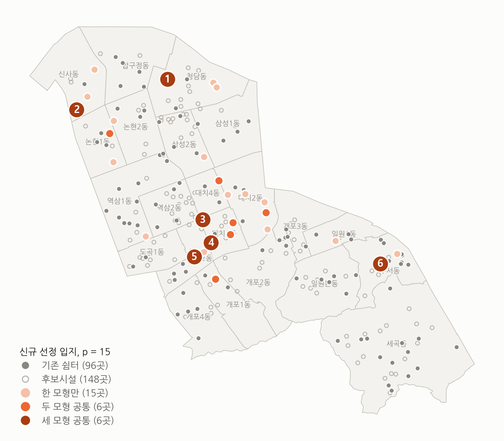

6-3. 세 모형이 함께 고른 위치
신규 15곳 선정 결과

세 모형 공통 6곳
세 모형 공통 6곳
두 모형 공통 6곳
한 모형만 15곳
로드뷰 1
1
1로드뷰 2
2
2로드뷰 3
3
3로드뷰 4
4
4로드뷰 5
5
5로드뷰 6
6
6우선 검토 6곳, 출입 조건은 현장 확인
신규 쉼터 15곳 기준, 세 모형의 선정 결과를 겹쳐 봄 / 사진: 카카오맵 로드뷰